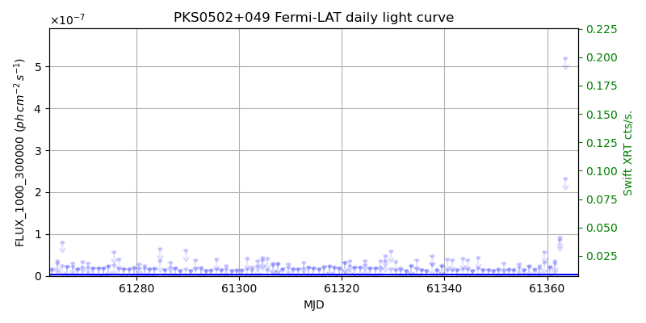
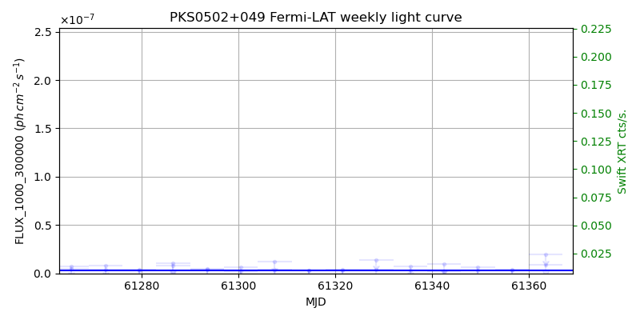

LAT Lightcurve site: https://fermi.gsfc.nasa.gov/ssc/data/access/lat/msl_lc/source/PKS_0502p049
Swift site: https://www.swift.psu.edu/monitoring/source.php?source=PKS0502+049
NED: Query
Time of last update of this page: UT: 2026-11-28 16:15 (MJD: 61372.677)
| Property | Value |
|---|---|
| R.A. | 5:05:23.28 |
| Dec. | 4:59:42.0 |
| z | 0.954 |
| 3FGL SpectrumType | LogParabola |
| 3FGL PL Index | |
| 3FGL Flux_100_300000 | 7.35e-08 1 / (s cm2) |
| 3FGL Flux_1000_300000 | 2.95e-09 1 / (s cm2) |
| 3FGL Flux >200 GeV | 7.78e-14 1 / (s cm2) |
| 3FGL Extrap. Crab >200 GeV | 0.00 |
| 3FGL Flux After EBL Absorption >200GeV | 2.21e-15 1 / (s cm2) |
| 3FGL EBL Crab Fraction >200GeV | 0.00 |
| MJD | dMJD | Flux | dFlux | Frac3FGL | FracCrab>200GeV | EBLFracCrab>200GeV |
|---|---|---|---|---|---|---|
| 61369.50 | 0.50 | 1.06e-05 | 0.00e+00 | 0.00 | 0.00 | 0.00 |
| 61370.50 | 0.50 | 5.43e-05 | 0.00e+00 | 0.00 | 0.00 | 0.00 |
| 61370.50 | 0.50 | 3.66e-05 | 0.00e+00 | 0.00 | 0.00 | 0.00 |
| 61371.50 | 0.50 | 1.17e-05 | 0.00e+00 | 0.00 | 0.00 | 0.00 |
| 61371.50 | 0.50 | 3.05e-05 | 0.00e+00 | 0.00 | 0.00 | 0.00 |

| MJD | dMJD | Flux | dFlux | Frac3FGL | FracCrab>200GeV | EBLFracCrab>200GeV |
|---|---|---|---|---|---|---|
| 61349.50 | 3.50 | 1.83e-08 | 0.00e+00 | 0.00 | 0.00 | 0.00 |
| 61356.50 | 3.50 | 2.06e-08 | 0.00e+00 | 0.00 | 0.00 | 0.00 |
| 61356.50 | 3.50 | 1.47e-07 | 0.00e+00 | 0.00 | 0.00 | 0.00 |
| 61363.50 | 3.50 | 3.59e-07 | 0.00e+00 | 0.00 | 0.00 | 0.00 |
| 61363.50 | 3.50 | 5.16e-08 | 0.00e+00 | 0.00 | 0.00 | 0.00 |

| MJD | dMJD | Flux | dFlux | Frac3FGL | FracCrab>200GeV | EBLFracCrab>200GeV |
|---|---|---|---|---|---|---|
| 61369.50 | 0.50 | 2.56e-06 | 0.00e+00 | 0.00 | 0.00 | 0.00 |
| 61370.50 | 0.50 | 1.39e-05 | 0.00e+00 | 0.00 | 0.00 | 0.00 |
| 61370.50 | 0.50 | 8.58e-06 | 0.00e+00 | 0.00 | 0.00 | 0.00 |
| 61371.50 | 0.50 | 1.76e-06 | 0.00e+00 | 0.00 | 0.00 | 0.00 |
| 61371.50 | 0.50 | 4.93e-06 | 0.00e+00 | 0.00 | 0.00 | 0.00 |

| MJD | dMJD | Flux | dFlux | Frac3FGL | FracCrab>200GeV | EBLFracCrab>200GeV |
|---|---|---|---|---|---|---|
| 61349.50 | 3.50 | 6.52e-09 | 0.00e+00 | 0.00 | 0.00 | 0.00 |
| 61356.50 | 3.50 | 2.91e-09 | 0.00e+00 | 0.00 | 0.00 | 0.00 |
| 61356.50 | 3.50 | 3.76e-09 | 0.00e+00 | 0.00 | 0.00 | 0.00 |
| 61363.50 | 3.50 | 8.86e-09 | 0.00e+00 | 0.00 | 0.00 | 0.00 |
| 61363.50 | 3.50 | 1.94e-08 | 0.00e+00 | 0.00 | 0.00 | 0.00 |
--------------------------------------------------------- Using user-supplied coords: 5:05:23.28 4:59:42.0 2000 --------------------------------------------------------- FLWO UT night of: 2026-11-29 Local Sid. @ Midnight: 04:08 Sunset (-15.0) (local, UT): 18:31 01:31 Sunrise (-15.0) (local, UT): 05:53 12:53 Moonrise (local, UT): 21:57 04:57 Moonset (local, UT): Moon phase: 0.72 --------------------------------------------------------- AzTime LSID UT Obj_el Obj_az Mn_el Mn_az Sep. --------------------------------------------------------- 18:31 22:39 01:31 -1.9 82.1 -32.9 32.1 55.3 19:01 23:09 02:01 3.4 86.0 -29.4 38.9 55.7 19:31 23:39 02:31 9.7 90.0 -25.4 45.0 56.0 20:01 00:09 03:01 16.0 94.0 -21.0 50.6 56.4 20:31 00:39 03:31 22.4 98.2 -16.2 55.6 56.7 21:01 01:09 04:01 28.7 102.7 -11.1 60.2 57.0 21:31 01:39 04:31 34.8 107.7 -5.4 64.5 57.4 22:01 02:09 05:01 40.8 113.4 0.4 68.5 57.7 22:31 02:39 05:31 46.5 120.1 5.8 72.2 57.9 23:01 03:10 06:01 51.8 128.2 11.6 75.8 58.2 23:31 03:40 06:31 56.5 138.2 17.5 79.4 58.5 00:01 04:10 07:01 60.2 150.6 23.6 82.9 58.7 00:31 04:40 07:31 62.6 165.5 29.7 86.5 58.9 01:01 05:10 08:01 63.4 182.0 35.8 90.3 59.2 01:31 05:40 08:31 62.2 198.2 42.0 94.4 59.4 02:01 06:10 09:01 59.5 212.5 48.1 99.1 59.6 02:31 06:40 09:31 55.5 224.4 54.2 104.7 59.8 03:01 07:10 10:01 50.6 233.9 60.1 111.7 59.9 03:31 07:40 10:31 45.2 241.6 65.6 121.1 60.1 04:01 08:10 11:01 39.4 248.1 70.5 134.7 60.3 04:31 08:40 11:31 33.4 253.6 74.0 154.7 60.4 05:01 09:11 12:01 27.2 258.4 75.2 181.1 60.6 05:31 09:41 12:31 20.9 262.8 73.6 206.8 60.7 05:53 10:02 12:53 16.3 265.8 71.0 221.2 60.9 --------------------------------------------------------- Dark hours >55 deg.: 0.00